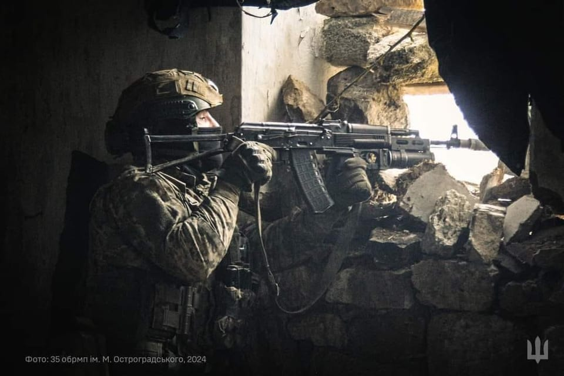

世界苦茶11月01日新闻 | 35条 | 中美防长首次会晤

中美防长首次会晤 | 安世半导体暂停对华供应 | 习近平与卡尼会谈 | 中日首脑首次会晤 | 美印簽署十年防務夥伴協議
苦茶数据
美元兑人民币：7.12（昨日7.11，前日7.09）
美元兑日元：153.95（昨日154.05，前日152.49）
上证指数：休市（昨日3954，前日3961）
标普500指数：休市（昨日6840，前日6822）
比特币：110359（昨日109290，前日110929）
布伦特原油：64.77（昨日64.60，前日64.53）
中国新闻
• 中美防长首会吉隆坡 董军吁美方台湾问题谨言慎行。
中国国防部长董军与美国战争部长赫格塞斯首次举行面对面会晤。董军强调，美方在台湾问题上要谨言慎行，旗帜鲜明反对台独。综合中国“国防部发布”公号、路透社和法新社报道，董军和赫格塞斯继9月通话后，星期五在吉隆坡出席亚细安防长会议期间会晤。在地区局势紧张、军事部署不断加强的背景下，此次会晤是中美双方沟通逐步改善的最新迹象。董军说，中国国家主席习近平同美国总统特朗普成功会晤，两国防务部门要以实际行动落实好元首共识，强化政策层沟通增信释疑，拓开一线官兵良性互动，为两国关系平稳前行做好同向支撑。习特会星期四在韩国釜山举行。
• 军工系统出身 湖南原一把手许达哲被罢免全国人大代表。
中国官方通报，中共湖南省委原书记许达哲被罢免全国人民代表大会代表职务。他已从公众视野中消失逾一年，曾深耕的军工系统在这期间因解放军反腐风暴而出现大震荡。中国全国人大常委会星期二公告，湖南省人大常委会决定罢免许达哲的第14届全国人大代表职务。许达哲的全国人大常务委员会委员、全国人大教育科学文化卫生委员会副主任委员职务也相应撤销。公开资料显示，今年69岁的许达哲出身军工系统，曾任中国航天科工集团公司总经理、中国航天科技集团公司董事长，中国工信部副部长、国家国防科技工业局局长。他在2016年空降湖南担任省长，并在2020年出任湖南省委书记，后于2021年10月卸任书记职务。
• 首批开放四城“粤车南下” 12月23日起可驶入香港市区。
广东省四个城市的车辆即日起可申请驶入香港，一旦获批，将可从12月23日起驶入香港市区。讨论多年的“粤车南下”政策，终于迎来明确落实的时间表。广东省公安厅、交通运输厅星期五公布详情，初期将先开放让四个城市的车辆南下，包括广州、珠海、江门、中山，半年后再推广至全省其他地市。符合进入香港市区条件的粤车，可以报名参加首批12月受理名额的抽签，每日受理100个，共有1700个名额，定于11月23日抽签。成功者可在12月9日起提出申请。从12月23日起，获准的粤车可在成功预约后，驾车经港珠澳大桥珠海公路口岸驶入香港市区。
• 习近平对新任日本首相表示，冲突不应成为两国关系的决定性因素。
在与高市早苗的首次会晤中，中国领导人习近平表示，冲突不应定义两国关系。习近平被国家广播电视总台央视引述称：“两国应着眼大局、求同存异，妥善处理分歧。应努力防止冲突和分歧定义更广泛的双边关系。”习近平和高市在很大程度上遵循了两国领导人此前会晤奠定的外交基调，重申致力于追求“具有战略性和互利的关系”，并建设富有建设性和稳定的关系。高市方面承认东京与北京之间仍存在诸多悬而未决的问题和挑战，但她表示希望直面这些问题并增进相互理解。
• 加拿大总理卡尼会晤习近平，称加中关系迎来转折点。
综合媒体报道，加拿大总理卡尼表示加中要“开启务实且建设性的对话”，他周五在亚太经合组织峰会期间与中国国家主席举行了双边会晤后，表示加中关系正迎来“转折点”。这是八年来两国领导人首次正式会面。卡尼已受邀前往中国进行国事访问。这是自2017年以来两国领导人首次正式会面。在会晤开始前的简短发言中，习近平谈到了中加两国长期的合作与交流历史，并邀请卡尼对中国进行国事访问。“中方愿同加方一道，推动中加关系早日重回健康、稳定、可持续的正确轨道，更好造福两国人民。”习近平表示。卡尼也承认，两国在过去几年中关系日趋疏远。（翻評：川普直接把加拿大推向中國。）
• 中国人民解放军在针对台湾的模拟登陆演习中使用了机器狗和空中无人机。
解放军在针对台湾的模拟登陆演练中使用机器人犬和空中无人机。纪录片显示，这些四足军用机器人参与了演习的各个环节，但也有一定局限。演练中，首批登陆部队投放了多只携带炸药的四足机器人犬。它们在滩头阵地上跨越壕沟、障碍块和路障，试图为突破敌方防线清出通路。与此同时，专业无人机部队出动第一视角无人机，与武装作战部队一道打击敌方射击点，为机器人犬提供火力压制，纪录片显示。整个行动中，侦察无人机监控战场并确认敌位，更多机器人犬则充当分散部署士兵的弹药运输者。另一只背负机枪的机器人犬则陪同一支伞兵小队穿越丛林渗透敌后，并率先拦截敌方增援。
• 作为中国C919的一项国际性胜利，文莱接受中国的航空规则。
在一项对中国C919的国际认可中，文莱接受北京的航空规则 对进入全球市场至关重要的航空标准认可，或为中国飞机进军东南亚铺平道路 中国驻文莱大使馆周一在网站上援引该赤道国家民航局表示，本月早些时候，文莱已接受中国民用航空局的适航法规。大使馆称，此前文莱仅认可欧盟航空安全局、美国联邦航空管理局和加拿大运输部民航局签发的飞机适航证书。“大使馆表示：通过此次修订，文莱成为又一个明确认可中国大型飞机标准的国家。” 中国商用飞机有限责任公司正试图将国产窄体客机C919的市场拓展到海外，挑战空客和波音的双寡头地位。中国商飞已经从中国航空公司获得了数百架C919的订单。
印太新闻
• 赖清德：坚决反对推进统一、一国两制。
中国大陆官方星期三重申“和平统一、一国两制”是解决台湾问题的基本方针，但不承诺放弃使用武力。台湾总统赖清德星期五则强调，坚决反对北京推进统一，反对“一国两制”。中国国务院台湾事务办公室发言人彭庆恩，星期三在主持例行新闻发布会时重申，中国大陆愿意为台海两岸和平统一创造广阔空间，以最大诚意、尽最大努力争取和平统一的前景，但决不承诺放弃使用武力，保留采取一切必要措施的选项。根据台湾总统府新闻稿，赖清德星期五上午前往新竹湖口营区，主持台湾陆军装甲第五八四旅联兵三营换装美制M1A2T坦克成军典礼时说，只有实力可以带来真和平，一纸和平协议无法带来和平，接受侵略者的主张、放弃主权，更无法达到和平。
• 台外交部：沈伯洋案坐实中国大陆是麻烦制造者。
中国大陆重庆市公安局对台湾民进党立委沈伯洋立案调查后，台湾外交部批评，此举不仅严重践踏人权，还进一步破坏两岸关系，坐实中国大陆就是“麻烦制造者”。综合台湾《自由时报》和ETtoday新闻云报道，台湾立法院外交及国防委员会星期四邀请国安局、外交部、陆委会等作报告并备质询。台湾外交部在书面报告中说，沈伯洋案显示中国大陆正进行跨境镇压或长臂管辖，变本加厉威吓；此举不仅严重侵犯人权、制造政治“寒蝉效应”，还进一步破坏两岸关系，坐实大陆就是名符其实的“麻烦制造者”。
• 美印签署十年防务伙伴框架协议。
2025年10月31日根据美国和印度军界高层的表述，该框架协议将促进两国情报和技术领域的合作，增强双方的战略趋同性。美国战争部长赫格塞斯和印度国防部长辛格周五在马来西亚举行的东盟峰会期间，签署了一项重要的防务协议。此举被看作是两国正努力修复近期以来出现的紧张关系。该协议的名称是“美印重要防务伙伴关系框架”，有效期为十年。赫格塞斯在网上发文称，该文件是“地区稳定和威慑的基石”。他表示，它将有助于深化两国之间的协调、情报共享和技术合作。
科技新闻
• 日本将在太空测试高超音速导弹追踪技术。
日本将在太空测试高超音速导弹跟踪技术 日本货运飞船HTV‑X正在执行对国际空间站的补给任务，随后将用于利用红外传感器监视高超音速滑翔器。该飞船周日由H3运载火箭从种子岛宇宙中心发射。周四抵达国际空间站后，被空间站的机械臂捕获并对接。飞船载有4.4吨的食品和补给以及将交付给国际空间站的科研物资。该飞船将在空间站停靠约三个月。其后，日本宇宙航空研究开发机构表示，它将在近地轨道作为“未来空间技术利用”的飞行试验平台服役长达18个月，随后在重返地球大气层时烧毁。
• 英伟达将向韩国供应26万枚尖端芯片。
美国科技巨头英伟达周五表示将向韩国供应26万枚最先进芯片，用于支持三星、SK海力士、现代汽车集团等企业建设AI基础设施。此消息发布之际，英伟达首席执行官黄仁勋在亚太经合组织峰会期间会见了韩国总统李在明及该国主要企业集团的负责人。韩国拥有全球两大芯片制造商——三星电子和SK海力士，其生产的芯片对人工智能产品及其依赖的数据中心至关重要。李在明总统此前也曾表示，希望韩国能成为全球人工智能领域的领先力量。英伟达在声明中表示，公司正在“与韩国合作，通过在自主云平台和人工智能工厂中部署超过25万颗英伟达GPU，扩展韩国人工智能基础设施”。
• 美国国家航空航天局回击金·卡戴珊的登月阴谋论。
美国航天局驳斥金·卡戴珊的登月阴谋论说法 美国航天局拒绝了真人秀明星金·卡戴珊关于1969年首次登月任务是伪造的说法。NASA代理局长肖恩·达菲在社交媒体上写道：“是的，我们以前去过月球6次！” 卡戴珊在她长期播出的电视系列节目《卡戴珊家族》的最新一集中发表了上述言论，她在节目中对合演莎拉·保罗森说她认为登月“没有发生过”。尽管有关人类是否真正登上月球的阴谋论已被反复驳斥，但这类说法在过去50多年里仍然存在，特别是在社交媒体兴起后更为流行。
• 大型科技公司持续在人工智能上大手笔投入，压力日益加剧，必须证明这些投入的理由。
硅谷的巨额人工智能支出热潮短期内不会减退。但华尔街对这些投资何时回本的耐心似乎有些消磨。本周，Meta、微软、亚马逊、苹果和谷歌母公司Alphabet都表示将增加资本开支，如用于数据中心和基础设施的租赁及设备支出。根据分析师本周在财报电话会上对Meta、Alphabet和谷歌等公司高管的犀利盘问来看，他们迫切希望看到这些庞大投资将带来可观回报的迹象。人工智能支出继续飙升。微软，Alphabet，亚马逊和Meta的整体营收同比增长，均超出华尔街预期。微软和谷歌的云业务分别增长了40%和34%。
• OpenAI星际之门项目规划容量已突破8吉瓦。
OpenAI、甲骨文及 Related Digital公司联合官宣，将在美国密歇根州萨利恩镇建设一个超过一吉瓦的数据中心园区，这是其推进AI基础设施建设的最新举措，也是 “星际之门” 计划的一部分，旨在扩大美国的AI基础设施容量。这个位于密歇根州的最新项目预计将于2026年初动工，是OpenAI与甲骨文此前7月份宣布的AI基建计划的一部分。此外，根据OpenAI的说法，若将这个新站点与美国已规划的其他六个站点计算在一起，那么星际之门项目规划容量突破八吉瓦，且未来三年内的总投资超过4500亿美元。OpenAI认为此举将使 “星际之门” 项目提前完成，以实现其五千亿美元以及10吉瓦算力的承诺。
经济新闻
• 美国软件公司SAS在中国经营25年后退出中国市场，裁员约400人。
美国软件公司SAS在中国运营25年后退出，裁员约400人 连续17年跻身中国最佳雇主之列的SAS，跟随其他西方科技公司缩减在华业务。周四，该公司通过电子邮件宣布裁员，并举办了一次简短的视频通话，一名员工称，高管在通话中感谢本地员工的贡献，并将退出归因于“组织优化”。SAS一位女发言人周五在回应《邮报》询问时表示：“SAS正在停止在中国的直接业务运营。此决定反映了我们在全球运营方式的更广泛调整，旨在优化布局并确保长期可持续性。”该发言人称，公司将通过第三方合作伙伴继续在中国大陆保持业务存在。一位知情人士称，SAS在大陆约裁撤400个岗位。
• 比亚迪7至9月的季度减收减益，销量减2%。
比亚迪10月30日发布的2025年7至9月财报显示，销售额同比下降3%至1949亿元，净利润同比下降33%至78亿元。这是自2020年1至3月以来，比亚迪首次出现季度减收减益。受中国国内市场竞争加剧影响，纯电动汽车等新能源汽车的销量增长陷入停滞。无论是销售额还是净利润均低于 QUICK FactSet 汇总的市场预期，销售额2152亿元、净利润121亿元。此前，比亚迪在中国政府指导下缩短了对交易伙伴的付款周期，由此产生的成本增加对利润形成挤压。继4至6月后，已连续两个季度同比利润下降。比亚迪公司的车辆销量同比下降2%，至111万辆。
• 德勤中国将在香港招聘1000名员工，并投资6400万美元。
德勤中国将在未来4年内在香港招聘1000名员工，并投资6400万美元。该公司在发布其《2025年香港经济展望》白皮书时公布了这一计划，白皮书指出香港四大增长引擎：推动金融创新、支持内地企业全球拓展、加强区域创新与科技合作，以及加速绿色转型。公司提供的资料显示，德勤中国在香港拟新增的职位将涉及金融服务创新、资本市场咨询和人工智能开发。该计划反映出香港正努力在金融和地产之外寻求自我重塑，因增长乏力和劳动力萎缩曾打击商业信心。
• 在贸易战不确定性影响下，中国制造业活动连续第七个月收缩。
国家统计局周五发布的数据显示，10月中国制造业采购经理人指数为49，较上月的49.8下降，连续第七个月处于50的荣枯线以下，低于金融数据提供商Wind调查的经济学家预期的50。该月度指数基于各行业供应链管理者的调查数据，50以上表明扩张，50以下表明收缩。国家统计局服务业调查中心首席统计师霍立辉表示，“受部分需求在国庆节前提前释放及国际环境更为复杂等因素影响，10月制造业活动较上月放缓”，并指出需求和供应均有所减弱。其中反映制造业需求的新订单分项指数10月为48.8，低于上月的49.7；生产分项指数由9月的51.9降至49。
• 开发商万科在销售放缓的背景下报告亏损23亿美元。
中国开发商万科在销售放缓中报告23亿美元亏损，持续的楼市疲软在最大国有股东增加支持的情况下仍加剧了对该开发商的压力。深圳万科报告第三季度亏损扩大，凸显在楼市长期低迷下其销售承压带来的日益严峻挑战。该公司在截至9月30日的三个月中亏损161亿元人民币，约为去年同期亏损的两倍。据周四向深圳交易所提交的公告，今年前九个月累计亏损已达280亿元。尽管最大国有股东深圳地铁集团加大了财政支持，但中国楼市的持续疲弱仍对万科的利润造成压力。随着大量境内债务到期，公司的财务状况仍然脆弱。7月份全国楼市进一步走弱，新建商品房价格下跌幅度加快。
• 日本首次从澳大利亚进口重稀土。
日本的综合商社双日10月30日之前首次进口了澳大利亚生产的重稀土。这是日本首次从中国以外的国家进口纯电动汽车和风力发电机马达等所需要的稀缺性较高的重稀土。未来将采购日本国内需求的30%左右。在中国加强稀土出口管控的背景下，确保中国以外的资源直接关系到日本的经济安全。本次先由澳大利亚莱纳斯公司在西澳大利亚州的韦尔德山矿山开采稀土。接着在马来西亚将其分离和提炼成镝和铽，之后再运往日本。镝和铽属于稀缺的重稀土。
• 比特币「减半后必跌」规律失效了。
作为代表性加密资产的比特币，仍在高位区间运作。自2024年4月比特币迎来新发行量减半的「减半周期」以来，已过去一年半。按照市场经验法则，现在本应进入下跌阶段，但这一次情况尚未出现。其背后原因之一，是机构投资者的影响力增强，市场主要参与者已经发生了更替。比特币的可发行总量是预先确定的，设计为新发行速度以约每4年1次的频率减为一半。自2024年4月迎来第四次减半期以来，到2025年10月已经过了一年半。根据减半期相关的经验法则，由于发行量减少有助于供需改善的预期，行情一度上升，在1～1年半后价格出现大调整。实际上，在第1～3次减半期。
• 荷兰安世半导体对中国厂暂停供应晶圆。
中国闻泰科技的荷兰子公司安世半导体向客户寄发的信件指出，公司已暂停向其中国组装厂供应晶圆；此举可能加剧令全球各车厂担忧的车用芯片供应短缺问题。路透社看到的信件显示，安世半导体已于本月26日暂停向其中国广东省东莞厂供应晶圆，并称原因在于“当地管理阶层近日未履行合约约定的付款条款”。信件日期标为29日，并由公司临时CEO蒂尔格署名。荷兰政府于 9月30日冻结闻泰科技对安世半导体的控制权一年，理由是担忧关键技术可能被转移至母公司闻泰科技，荷中两国政府因此打起安世半导体主导权大战。虽然安世半导体大多数芯片是在欧洲生产，但约70%是在中国封装后才分销。
俄乌战争
• 匈牙利在对俄罗斯石油问题上的拖延遭遇现实。
美国对俄罗斯石油的打击威胁要扼断匈牙利的供应，使得布达佩斯别无选择，只能转向长期回避的地方：克罗地亚。三年来，匈牙利总理维克多·欧尔班一直抱怨，国家无法放弃俄罗斯石油，否则将危及能源安全并可能导致油价暴涨。但现在——随着美国制裁可能切断匈牙利的一家主要俄罗斯供应商，且布鲁塞尔计划提出对莫斯科石油的新关税——布达佩斯将被迫另寻进口来源。
• 据报道，在与美国关系紧张之际，委内瑞拉向俄罗斯请求导弹和雷达。
华盛顿邮报10月31日报道，引述该媒体审阅的机密文件称，委内瑞拉独裁者尼古拉斯·马杜罗正向俄罗斯请求军事援助。此请求正值加勒比海局势紧张之际，美国军方对疑似毒品走私船只实施打击，华盛顿据报正在考虑对据称用于毒品走私的委内瑞拉军事设施实施空袭。根据华盛顿邮报获得的美国政府文件，马杜罗致信俄罗斯总统普京，请求修复雷达，军用飞机，并可能请求导弹供应。马杜罗与莫斯科关系密切，两国因共同的反西方情绪而结盟。委内瑞拉总统曾谴责西方对俄罗斯的制裁并支持莫斯科的战争。文件还显示，委内瑞拉当局向中国和伊朗寻求军事支持和装备。
• 泽连斯基全面掌控敖德萨，向地方政府发出信息。
泽连斯基完全控制敖德萨，向地方政府发出警告 前敖德萨市长赫纳季·特鲁哈诺夫，摄于2022年9月27日乌克兰敖德萨市政厅。当地居民在特鲁哈诺夫被剥夺乌克兰公民身份，随即结束其政治生涯时爆发庆祝。将乌克兰公民剥夺国籍的这一有争议做法，得到了与这位有污点市长多年斗争者的赞同。被反对者视为亲俄且腐败的特鲁哈诺夫自2014年起执掌敖德萨，不久在护照被吊销后被指控失职。10月31日他被限制居家。特鲁哈诺夫在基辅一次庭审上通过视频连线表示：“我认为这是一次有预谋的政治打击”，并称这些指控“毫无依据”。基辅独立报采访的专家认为，泽连斯基决定剥夺特鲁哈诺夫国籍的行动已酝酿已久。
• 据报道，印度最大的炼油商从未受制裁的实体购买俄罗斯原油。
路透社10月31日报道，印度最大的炼油商印度石油公司从未被制裁的实体购买了五批将于12月交付的俄罗斯原油。此类采购显示印度炼厂在适应新的美国制裁同时，仍设法获得俄罗斯原油，寻求替代供应商以避免受罚。美国于10月22日宣布的新限制针对俄罗斯两大石油公司Rosneft和Lukoil及其子公司，并为对与黑名单对象进行交易的外国机构实施二次制裁铺平了道路。据路透社报道，IOC购买了约350万桶高标号ESPO原油，购入价接近迪拜报价，预计12月运抵印度东部一港口。路透社的消息人士未透露卖方身份。
• 在重建与大马士革关系之际，俄罗斯恢复对叙利亚的军事航班。
俄罗斯在停飞六个月后恢复了对叙利亚的军事航班，此举表明莫斯科在长期盟友巴沙尔·阿萨德被推翻后，正努力保持在中东的立足点。航班追踪网站Flightradar24的数据显示，最近几天有俄罗斯军机降落在位于拉塔基亚的赫梅米姆空军基地。彭博社援引一位不愿透露姓名的接近克里姆林宫人士的话证实，航班已恢复。此举是在莫斯科在叙利亚数月不确定局面后寻求巩固其军事存在之际采取的。俄罗斯总统弗拉基米尔·普京最近在莫斯科会见了自上任以来首次正式访问的叙利亚总统艾哈迈德·沙拉阿。
世界新闻
• 美国机密报告中指出，以色列在加沙涉嫌侵犯人权事件已高达数百起。
据华盛顿邮报报道，美国政府监察机构的机密报告发现，以色列军队在加沙地带违反美国人权法的事件可能多达“数百起”，审查这些事件将令国务院“耗费多年时间”，据两名知情的美国官员透露。这份由美国国务院监察长办公室完成的报告，是美国政府首次在正式文件中承认以色列在加沙行动已涉及《利希法》所规范的范围。《利希法》禁止向被可信指控犯下严重人权侵害的外国军事单位提供美国援助。由于报告属于机密，这两名官员要求匿名。他们表示，报告内容让人对以色列行为的问责前景感到担忧，因为涉及的事件数量庞大、处理流程冗长，而审查程序本身又对以色列国防军相对宽容。
• 特朗普政府已经决定对委内瑞拉发动军事打击，目标可能是推翻马杜罗政权。
据迈阿密先驱报报道，特朗普政府已决定攻击委内瑞拉境内的军事设施，打击行动可能随时展开，消息人士称这是美国对“太阳贩毒集团”行动的下一阶段。《华尔街日报》最早在周四晚间报道了这项计划。特朗普政府指称这一贩毒组织由委内瑞拉强人马杜罗领导，由政权高层运作。计划中的打击将摧毁这些军事设施。消息人士透露，这些空袭目标可能在数天甚至数小时内被锁定，目的是摧毁贩毒集团的高层架构。美国官员认为，这个集团每年出口约500吨可卡因，销往欧洲和美国。虽然消息人士未明确表示马杜罗是否是打击目标，但其中一人表示，马杜罗的时间已经不多。
• 法国遭遇第二起重大劫案，窃贼盯上黄金精炼厂。
法国再遭重大劫案：窃贼盯上金属精炼厂 六名嫌疑人在法国里昂附近被捕，涉嫌参与该国最新一起公然劫案。袭击者周四使用爆炸物闯入一家贵金属精炼厂，随后携带赃物逃离，赃物主要为黄金，价值约1200万欧元。官员称，经过追捕，警方抓获了嫌疑人并缴获了赃物。此次劫案发生在本月早些时候卢浮宫博物馆失窃案后不久，后者已有五人被捕。里昂事件中，社交媒体上由附近居民发布的影像显示，两名男子出现在一辆白色面包车旁，有人把梯子搭在公司围栏上并爬了过去。另一段视频显示一名劫匪持有武器并打开面包车后门，另有人将公文箱装上车。一位不愿透露姓名的邻居告诉法新社，她听到一声巨响，“真的很震撼”。
**• 美国马萨诸塞州和罗德岛州的联邦法官10月31日裁定，联邦政府须在政府停摆期间继续使用应急资金维持“补充营养援助计划”。 **
“补充营养援助计划”为约八分之一的美国人提供食品救济。美国农业部最初准备动用应急资金维持SNAP运行，但随后又表示不允许SNAP使用应急资金，并计划于11月1日起暂停为SNAP提供资金。民主党主政的25州和哥伦比亚特区对暂停资金提起诉讼，认为必须使用应急资金来维持SNAP运行。部分地方政府、非营利组织和行业工会也就农业部这一决定提起诉讼。罗德岛州和马萨诸塞州的联邦地区法院法官分别裁定，SNAP必须使用应急资金来为SNAP提供资金，并要求政府在11月3日前向法院提供最新进展。罗德岛州联邦地区法院法官表示，联邦政府决定不动用应急资金支付11月份的食品福利是“武断的”，暂停食品救济发放“史无前例”，可能会造成“无法弥补的损害”。特朗普政府尚未表示是否会就裁决提出上诉。
• 中央情报局局长低调会见欧盟官员，缓解欧盟对美国情报共享的担忧。
中央情报局局长约翰·拉特克利夫本周低调访问布鲁塞尔，会见了欧盟外交和情报高层官员，传达了一个不太含蓄的信息：你们仍然可以信任我们。拉特克利夫会见了欧盟高级外交官卡娅·卡拉斯，以及来自欧盟情报与态势中心和欧盟军事参谋部情报处的高级官员，据三名知情人士透露。两位官员表示，此行的目的是稳定情绪并重申华盛顿对情报共享的承诺——因为在唐纳德·特朗普担任总统期间，一些欧洲首都对美国外交政策走向感到不安。
• 联合国人权事务高级专员表示，美国对疑似贩毒船只的袭击违反法律。
联合国人权事务高级专员谴责美国在加勒比海和太平洋对据称运输毒品的船只发动的军事打击，称这些致命袭击违反国际法，构成“法外处决”。沃尔克·特尔克周五表示，自九月初以来，报道称已有超过60人在美方袭击中丧生。他将这些袭击称为“不可接受”，并表示华盛顿必须立即停止，并对事件进行迅速、独立和透明的调查。总统唐纳德·特朗普表示，这些袭击对于遏制毒品流入美国是必要的，他有法律权力继续在国际水域轰炸船只。（翻評：可惜這個對現在的大多數人都太複雜了，打擊販毒船隻，還要符合程序？這是什麼白左思想？今天這樣想，明天誰都可以成為販毒者，參見菲律賓。）
• 拉脱维亚议会投票决定退出一项保护妇女的全球条约。
拉脱维亚有可能成为首个退出一项旨在打击家庭虐待和针对妇女暴力的标志性国际条约的欧盟国家，此前议会在周四进行投票。议员以56票对32票、2票弃权的差距投票决定退出伊斯坦布尔公约——这是一项欧洲委员会的条约，旨在统一对遭受暴力的妇女的支持——该公约在生效仅一年后即遭撤回。“这是议会一个可耻的决定，”中左翼进步党议会党团领袖安德里斯·舒瓦耶夫斯在投票后不久对POLITICO表示，此次投票是在经过激烈的14小时辩论后进行的。